Algorithms# 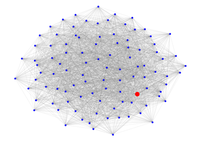 Beam Search Beam Search 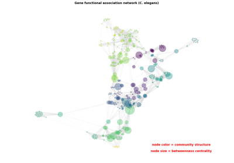 Betweenness Centrality Betweenness Centrality 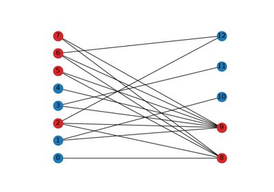 Bipartite Motifs: α/β-core Bipartite Motifs: α/β-core 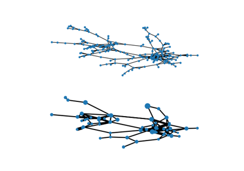 Blockmodel Blockmodel 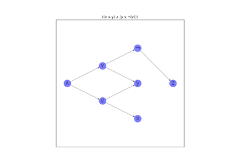 Circuits Circuits 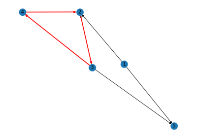 Cycle Detection Cycle Detection 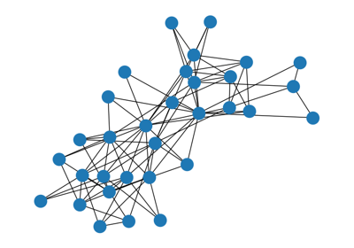 Davis Club Davis Club 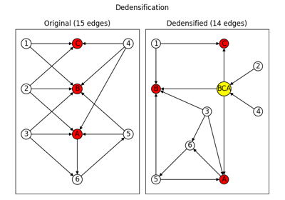 Dedensification Dedensification 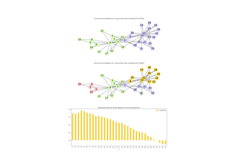 Community Detection using Girvan-Newman Community Detection using Girvan-Newman 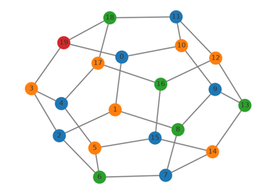 Greedy Coloring Greedy Coloring 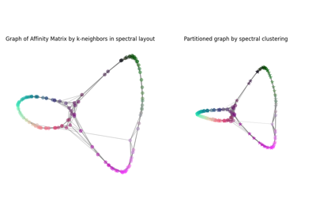 Image Segmentation via Spectral Graph Partitioning Image Segmentation via Spectral Graph Partitioning Iterated Dynamical Systems Iterated Dynamical Systems 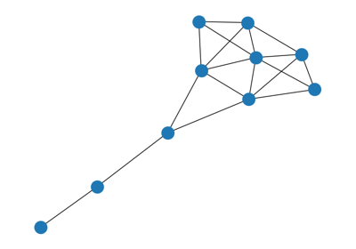 Krackhardt Centrality Krackhardt Centrality 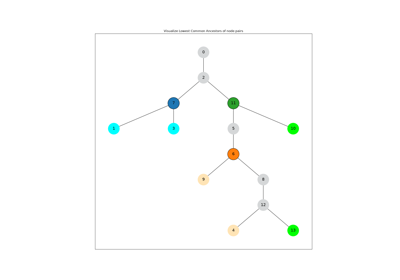 Lowest Common Ancestors Lowest Common Ancestors 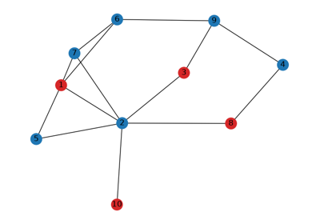 Maximum Independent Set Maximum Independent Set 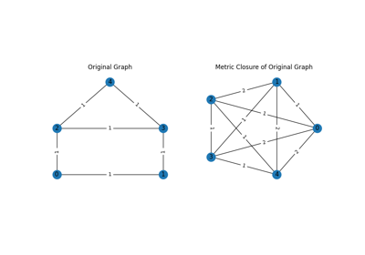 Metric Closure Metric Closure 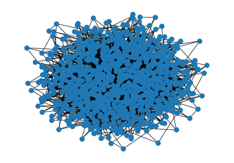 Parallel Betweenness Parallel Betweenness 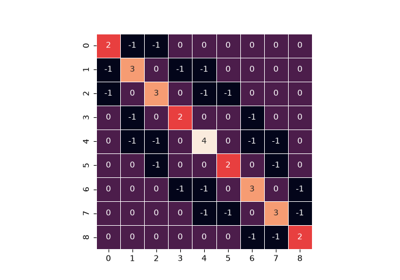 Reverse Cuthill–McKee Reverse Cuthill--McKee 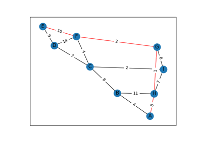 Find Shortest Path Find Shortest Path 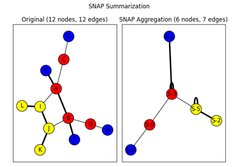 SNAP Graph Summary SNAP Graph Summary 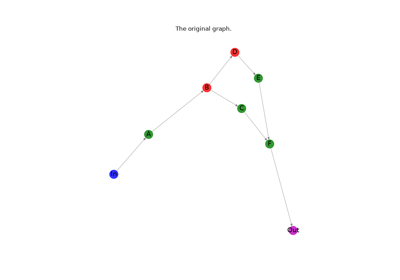 Subgraphs Subgraphs 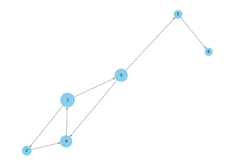 TrustRank TrustRank